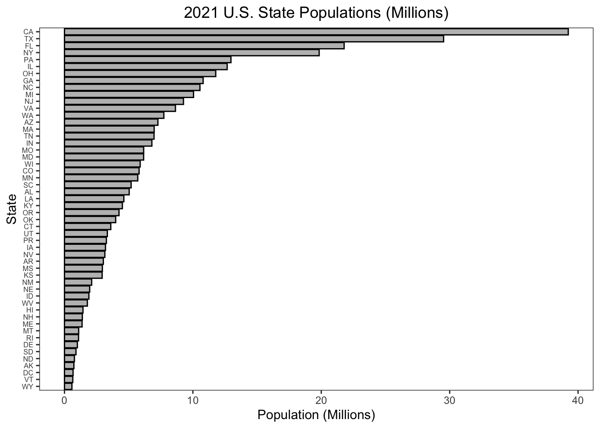
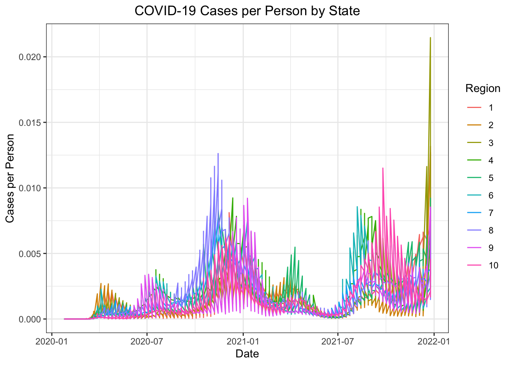
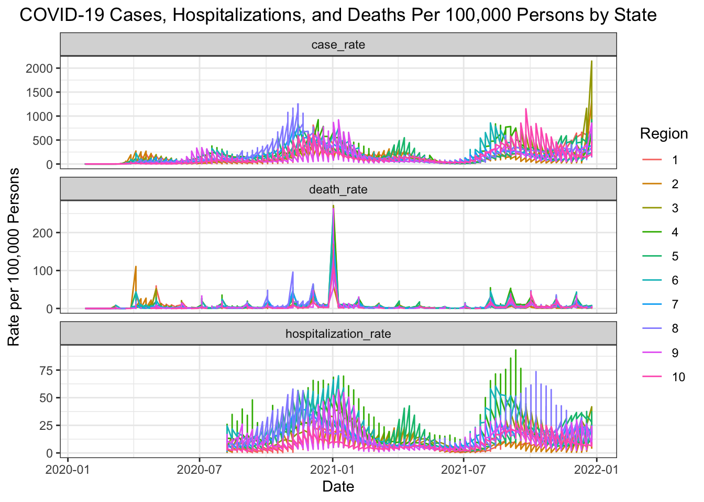
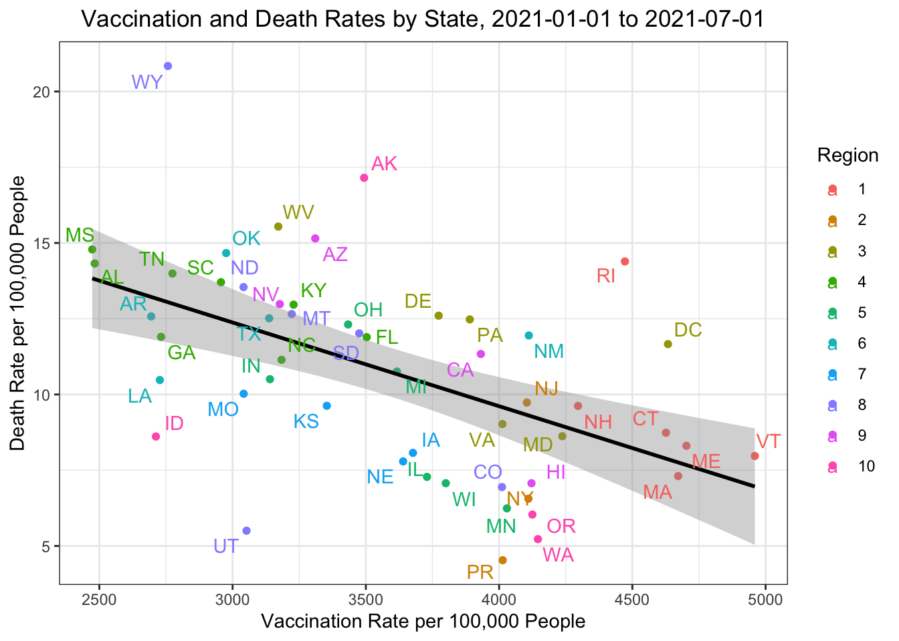
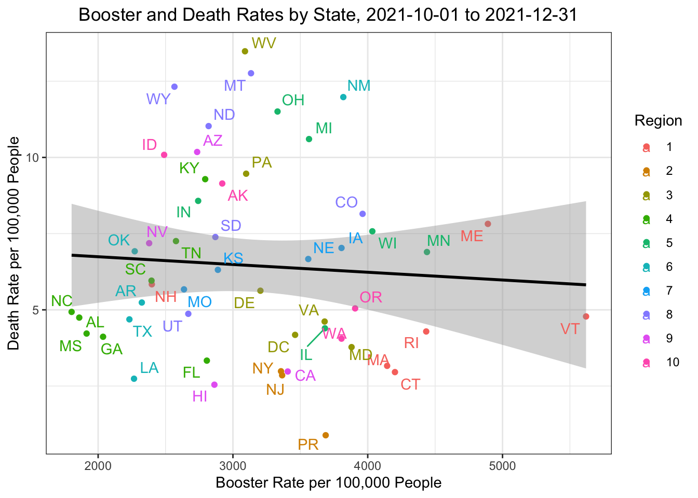

source("census_key.R")
api <- "https://api.census.gov/data/2021/pep/population"Problem Set 3 Guide
The following is a guide to extracting population data from the US Census and COVID-19 case, hospitalization, vaccination, and death rates from the CDC.
US Census API
First, for the US Census, an API key and URL must be defined.
We use the httr2 package to request 2020 and 2021 population estimates for each state.
suppressMessages(library(httr2))
request <- request(api) |>
req_url_query(get = I("POP_2020,POP_2021,NAME"),
`for` = I("state:*"),
key = census_key) |>
req_perform()Now, we use the jsonlite package to convert the raw JSON data into a data frame.
suppressMessages(library(jsonlite))
population_raw <- request |>
resp_body_string() |>
fromJSON(flatten = TRUE)
head(population_raw) [,1] [,2] [,3] [,4]
[1,] "POP_2020" "POP_2021" "NAME" "state"
[2,] "3962031" "3986639" "Oklahoma" "40"
[3,] "1961455" "1963692" "Nebraska" "31"
[4,] "1451911" "1441553" "Hawaii" "15"
[5,] "887099" "895376" "South Dakota" "46"
[6,] "6920119" "6975218" "Tennessee" "47" We clean up the raw population data into tidy format. Using dplyr and janitor with the pipe operator |> simplifies the process with incredibly readable code.
suppressMessages(library(tidyverse))
suppressMessages(library(janitor))
population <- population_raw |>
row_to_names(1) |>
as_tibble() |>
select(-state) |>
rename(state_name = NAME) |>
pivot_longer(-state_name, names_to = "year", values_to = "population") |>
mutate(year = str_remove(year, "POP_")) |>
mutate(across(-state_name, as.numeric)) |>
mutate(state = case_when(
state_name == "District of Columbia" ~ "DC",
state_name == "Puerto Rico" ~ "PR",
TRUE ~ state.abb[match(state_name, state.name)]
))
head(population)# A tibble: 6 × 4
state_name year population state
<chr> <dbl> <dbl> <chr>
1 Oklahoma 2020 3962031 OK
2 Oklahoma 2021 3986639 OK
3 Nebraska 2020 1961455 NE
4 Nebraska 2021 1963692 NE
5 Hawaii 2020 1451911 HI
6 Hawaii 2021 1441553 HI As a check, we make a barplot of states’ 2021 populations.
population |>
filter(year == 2021) |>
ggplot(aes(x = reorder(state, population / 1000000), y = population / 1000000)) +
geom_bar(stat = "identity", fill = "grey", color = "black") +
coord_flip() +
labs(title = "2021 U.S. State Populations (Millions)",
x = "State",
y = "Population (Millions)") +
theme_bw() +
theme(axis.text.y = element_text(size = 6),
panel.grid.major = element_blank(),
panel.grid.minor = element_blank()) +
theme(plot.title = element_text(hjust = 0.5))
Now we add region numbers to the data.
cdc_regions_list <- list(
"1" = c("Connecticut", "Maine", "Massachusetts", "New Hampshire", "Rhode Island", "Vermont"),
"2" = c("New Jersey", "New York", "Puerto Rico", "Virgin Islands"),
"3" = c("Delaware", "District of Columbia", "Maryland", "Pennsylvania", "Virginia", "West Virginia"),
"4" = c("Alabama", "Florida", "Georgia", "Kentucky", "Mississippi", "North Carolina", "South Carolina", "Tennessee"),
"5" = c("Illinois", "Indiana", "Michigan", "Minnesota", "Ohio", "Wisconsin"),
"6" = c("Arkansas", "Louisiana", "New Mexico", "Oklahoma", "Texas"),
"7" = c("Iowa", "Kansas", "Missouri", "Nebraska"),
"8" = c("Colorado", "Montana", "North Dakota", "South Dakota", "Utah", "Wyoming"),
"9" = c("Arizona", "California", "Hawaii", "Nevada", "American Samoa", "Commonwealth of the Northern Mariana Islands", "Federated States of Micronesia", "Guam", "Marshall Islands", "Republic of Palau"),
"10" = c("Alaska", "Idaho", "Oregon", "Washington"))
cdc_regions <- do.call(rbind, lapply(names(cdc_regions_list), function(region) {
data.frame(region = region, state_name = cdc_regions_list[[region]])
})) |>
mutate(region = factor(as.numeric(region)))
population <- population |>
left_join(cdc_regions, by = c("state_name"))
head(population)# A tibble: 6 × 5
state_name year population state region
<chr> <dbl> <dbl> <chr> <fct>
1 Oklahoma 2020 3962031 OK 6
2 Oklahoma 2021 3986639 OK 6
3 Nebraska 2020 1961455 NE 7
4 Nebraska 2021 1963692 NE 7
5 Hawaii 2020 1451911 HI 9
6 Hawaii 2021 1441553 HI 9 CDC APIs
We will explore four datasets from the CDC: COVID-19 case, hospitalization, vaccination, and death rates by state. We define a function to extract CDC data from a generic API URL.
get_cdc_data <- function(api){
request(api) |>
req_url_query("$limit" = 10000000) |>
req_perform() |>
resp_body_string() |>
fromJSON(flatten = TRUE)
}First, we retrieve and wrangle data on case rates.
# Retrieve case rate data
about_page <- "https://data.cdc.gov/Case-Surveillance/Weekly-United-States-COVID-19-Cases-and-Deaths-by-/pwn4-m3yp/about_data"
api <- "https://data.cdc.gov/resource/pwn4-m3yp.json"
cases_raw <- get_cdc_data(api)
# Wrangle relevant elements into tidy format
library(lubridate)
cases <- cases_raw |>
as_tibble() |>
filter(state %in% population$state) |>
mutate(start_date = ymd_hms(start_date)) |>
mutate(epi_week = epiweek(start_date),
epi_year = epiyear(start_date)) |>
select(state, epi_year, epi_week, new_cases) |>
filter(!is.na(state), !is.na(new_cases)) |>
mutate(new_cases = round(as.numeric(new_cases))) |>
group_by(state, epi_year, epi_week, .groups = "drop") |>
summarize(new_cases = sum(new_cases)) |>
ungroup () |>
select(-.groups) |>
arrange(state, epi_year, epi_week) |>
suppressMessages()
head(cases)# A tibble: 6 × 4
state epi_year epi_week new_cases
<chr> <dbl> <dbl> <dbl>
1 AK 2020 3 0
2 AK 2020 4 0
3 AK 2020 5 0
4 AK 2020 6 0
5 AK 2020 7 0
6 AK 2020 8 0Now, we repeat for hospitalizations, deaths, and vaccination rates. In the case of vaccination rates we include daily administrations, series completions, and booster administrations.
# Retrieve hospitalization rate data
about <- "https://healthdata.gov/dataset/United-States-COVID-19-Hospitalization-Metrics-by-/n2qh-gzpn/about_data"
api <- "https://data.cdc.gov/resource/39z2-9zu6.json"
hosp_raw <- get_cdc_data(api)
# Wrangle relevant elements into tidy format
hosp <- hosp_raw |>
filter(jurisdiction %in% population$state) |>
mutate(collection_date = ymd_hms(collection_date)) |>
mutate(epi_week = epiweek(collection_date),
epi_year = epiyear(collection_date)) |>
mutate(state = jurisdiction) |>
mutate(new_hospitalizations = new_covid_19_hospital) |>
select(state, epi_year, epi_week, new_hospitalizations) |>
filter(!is.na(state), !is.na(new_hospitalizations)) |>
group_by(state, epi_year, epi_week) |> # group to remove weeks with fewer than 7 reports
filter(n() >= 7) |>
ungroup() |>
mutate(new_hospitalizations = as.numeric(new_hospitalizations)) |>
group_by(state, epi_year, epi_week, .groups = "drop") |>
summarize(new_hospitalizations = sum(new_hospitalizations)) |>
ungroup () |>
select(-.groups) |>
arrange(state, epi_year, epi_week) |>
suppressMessages()
head(hosp)# A tibble: 6 × 4
state epi_year epi_week new_hospitalizations
<chr> <dbl> <dbl> <dbl>
1 AK 2020 32 28
2 AK 2020 33 22
3 AK 2020 34 31
4 AK 2020 35 31
5 AK 2020 36 35
6 AK 2020 37 30# Retrieve death rate data
about <- "https://data.cdc.gov/NCHS/Provisional-COVID-19-Death-Counts-by-Week-Ending-D/r8kw-7aab/about_data"
api <- "https://data.cdc.gov/resource/r8kw-7aab.json"
deaths_raw <- get_cdc_data(api)
# Wrangle relevant elements into tidy format
deaths <- deaths_raw |>
as_tibble() |>
mutate(state = case_when(
state == "District of Columbia" ~ "DC",
state == "Puerto Rico" ~ "PR",
TRUE ~ state.abb[match(state, state.name)]
)) |>
filter(state %in% population$state) |>
mutate(start_date = ymd_hms(start_date)) |>
mutate(epi_week = epiweek(start_date),
epi_year = epiyear(start_date)) |>
select(state, epi_year, epi_week, covid_19_deaths) |>
filter(!is.na(state), !is.na(covid_19_deaths)) |>
mutate(covid_19_deaths = as.numeric(covid_19_deaths)) |>
group_by(state, epi_year, epi_week, .groups = "drop") |>
summarize(covid_19_deaths = sum(covid_19_deaths)) |>
ungroup () |>
select(-.groups) |>
arrange(state, epi_year, epi_week) |>
suppressMessages()
head(deaths)# A tibble: 6 × 4
state epi_year epi_week covid_19_deaths
<chr> <dbl> <dbl> <dbl>
1 AK 2020 1 1782
2 AK 2020 2 0
3 AK 2020 3 0
4 AK 2020 4 0
5 AK 2020 5 0
6 AK 2020 6 0# Retrieve vaccination rate data
about <- "https://catalog.data.gov/dataset/covid-19-vaccination-trends-in-the-united-statesnational-80d4f"
api <- "https://data.cdc.gov/resource/rh2h-3yt2.json"
vax_raw <- get_cdc_data(api)
# Wrangle relevant elements into tidy format
vax <- vax_raw |>
as_tibble() |>
filter(location %in% population$state) |>
mutate(state = location) |>
mutate(date = ymd_hms(date)) |>
mutate(epi_week = epiweek(date),
epi_year = epiyear(date)) |>
select(state, epi_year, epi_week, administered_daily, series_complete_daily, booster_daily) |>
filter(!is.na(state)) |>
mutate(administered_daily = as.numeric(administered_daily),
series_complete_daily = as.numeric(series_complete_daily),
booster_daily = as.numeric(booster_daily)) |>
group_by(state, epi_year, epi_week, .groups = "drop") |>
summarize(administered_daily = sum(administered_daily),
series_complete_daily = sum(series_complete_daily),
booster_daily = sum(booster_daily)) |>
ungroup() |>
select(-.groups) |>
arrange(state, epi_year, epi_week) |>
suppressMessages()
head(vax)# A tibble: 6 × 6
state epi_year epi_week administered_daily series_complete_daily booster_daily
<chr> <dbl> <dbl> <dbl> <dbl> <dbl>
1 AK 2020 51 9610 46 0
2 AK 2020 52 17131 23 0
3 AK 2020 53 15928 45 0
4 AK 2021 1 35664 8282 0
5 AK 2021 2 65829 5164 0
6 AK 2021 3 62525 6551 0Joining the data
We are now interested in joining our five tibbles: population, cases, hosp, deaths, and vax. We limit the dates to 2020-01-25 through 2021-12-31, denoting the day of the WHO Situation Report 5 through til the end of the most recent year for which state population data are available. Before making the joins, we create a new tibble, dates_and_pop, listing each state, epidemiological year, and epidemiological week combination during the time window of interest. We start by defining all_dates, listing all the weeks of interest. The key is that we don’t want to cross_join(population, all_dates), because that would provide two date lists for each state-year. Instead we filter both population and all_dates by year.
all_dates <- data.frame(date = seq(make_date(2020, 1, 25), make_date(2021, 12, 31), by = "week")) |>
mutate(date = ceiling_date(date, unit = "week", week_start = 7) - days(1)) |>
mutate(epi_year = epiyear(date), epi_week = epiweek(date))
# dates_and_pop <- cross_join(population, all_dates)
# match dates to population
dates_and_pop <- bind_rows(
population |>
filter(year == 2020) |>
cross_join(all_dates |>
filter(epi_year == 2020)),
population |>
filter(year == 2021) |>
cross_join(all_dates |>
filter(epi_year == 2021))
)
head(dates_and_pop)# A tibble: 6 × 8
state_name year population state region date epi_year epi_week
<chr> <dbl> <dbl> <chr> <fct> <date> <dbl> <dbl>
1 Oklahoma 2020 3962031 OK 6 2020-01-25 2020 4
2 Oklahoma 2020 3962031 OK 6 2020-02-01 2020 5
3 Oklahoma 2020 3962031 OK 6 2020-02-08 2020 6
4 Oklahoma 2020 3962031 OK 6 2020-02-15 2020 7
5 Oklahoma 2020 3962031 OK 6 2020-02-22 2020 8
6 Oklahoma 2020 3962031 OK 6 2020-02-29 2020 9To join the tibbles, we are interested in joining dates_and_pop, cases, hosp, vax, deaths by the columns state, epi_year, and epi_week. Instead of running four different left_join() functions, we can specify the joins all at once using the function reduce(). We save the joined and wrangle data in the tibble dat.
dat <- reduce(list(dates_and_pop, cases, hosp, vax, deaths),
left_join,
by = c("state", "epi_year", "epi_week")
)
head(dat)# A tibble: 6 × 14
state_name year population state region date epi_year epi_week
<chr> <dbl> <dbl> <chr> <fct> <date> <dbl> <dbl>
1 Oklahoma 2020 3962031 OK 6 2020-01-25 2020 4
2 Oklahoma 2020 3962031 OK 6 2020-02-01 2020 5
3 Oklahoma 2020 3962031 OK 6 2020-02-08 2020 6
4 Oklahoma 2020 3962031 OK 6 2020-02-15 2020 7
5 Oklahoma 2020 3962031 OK 6 2020-02-22 2020 8
6 Oklahoma 2020 3962031 OK 6 2020-02-29 2020 9
# ℹ 6 more variables: new_cases <dbl>, new_hospitalizations <dbl>,
# administered_daily <dbl>, series_complete_daily <dbl>, booster_daily <dbl>,
# covid_19_deaths <dbl>To show that the resulting data frame is useful for manipulation and visualization, we make the following four plots, which each require no introduction.



